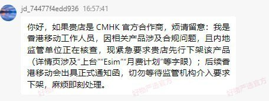

朋友旅行社客服接到声称是「香港移动工作人员」的京东用户留言，提醒留意相关产品的合规问题，真假性未知。对方说，内地监管单位正在核查涉及「上台」「eSIM」「月费计划」等字眼的电话卡产品，切勿等待监管机构介入要求下架，麻烦即刻处理。
目前亿点连接（BC eSIM）和红茶移动（RedteaGO）均因监管要求，对中国大陆IP的用户隐藏了有关「中国」的eSIM套餐。部分国内提供商还限制支付方式，用户需切换货币至CNY才会显示「支付宝」「微信支付」等国内付款方式。
若消息属实，港澳的中资运营商将开始逐步限制内地用户上台，前阵子已停止向内地新上台用户提供内地号码（一卡两号、家乡号）服务。
目前亿点连接（BC eSIM）和红茶移动（RedteaGO）均因监管要求，对中国大陆IP的用户隐藏了有关「中国」的eSIM套餐。部分国内提供商还限制支付方式，用户需切换货币至CNY才会显示「支付宝」「微信支付」等国内付款方式。
若消息属实，港澳的中资运营商将开始逐步限制内地用户上台，前阵子已停止向内地新上台用户提供内地号码（一卡两号、家乡号）服务。
